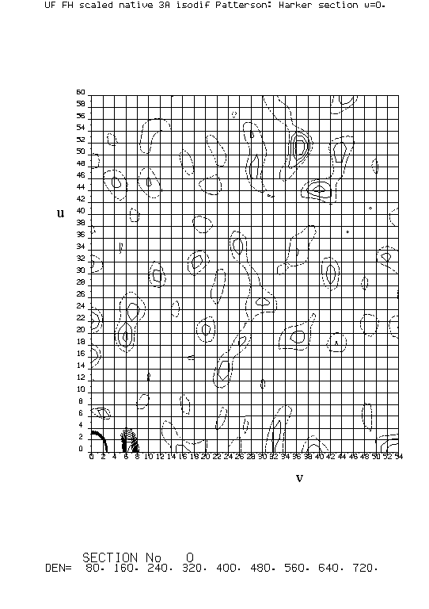
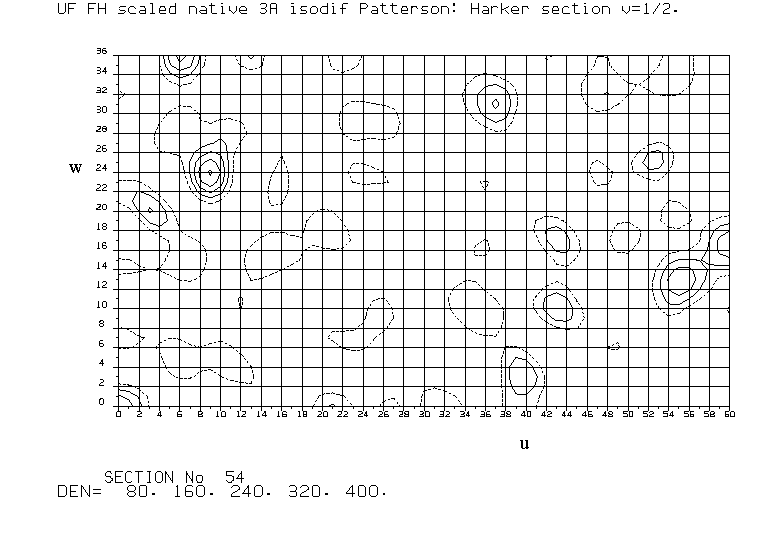
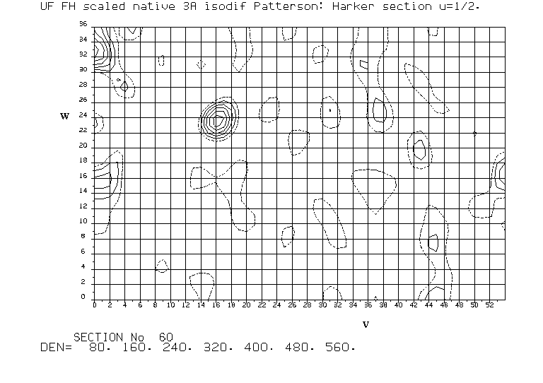

|
CCP4i: Graphical User Interface |
| MIR Tutorial Bath - MIRAS case study |
 |
BACK TO INDEX |  |
Six heavy-atom derivatives of porphobilinogen deaminase (PBGD), an enzyme of 313 amino-acids found ubiquitously in the haem and chlorophyll biosynthetic pathways, and which crystallises in space group P21212 were collected to 3Å resolution. Four of the derivatives appeared to have usable anomalous data (the anomalous data from the other two were rejected because of data collection problems).
#
fhscal HKLIN pbgd HKLOUT pbgd_fhscal <<EOD
LABIN FP=FNAT SIGFP=SIGFNAT -
FPH1=FPTCL SIGFPH1=SIGFPTCL DANO1=DANPTCL SIGDANO1=SIGDANPTCL -
FPH2=FUAC SIGFPH2=SIGFUAC DANO2=DANUAC SIGDANO2=SIGDANUAC -
FPH3=FUF SIGFPH3=SIGFUF DANO3=DANUF SIGDANO3=SIGDANUF -
FPH4=FUS SIGFPH4=SIGFUS -
FPH5=FPCMBS SIGFPH5=SIGFPCMBS DANO5=DANPCMBS SIGDANO5=SIGDANPCMBS -
FPH6=FYBCL SIGFPH6=SIGFYBCL
BIAS 1 ! Compensate for over-estimation of weak reflections.
EOD
Note that the BIAS factor, which compensates for over-estimation of the square of the isomorphous difference for weak reflections, particularly at high resolution, should only be used if it is known that the standard deviations of the amplitudes are reliable.
The w=0, v=½ and u=½ Harker sections of the isomorphous difference Pattersons for the uranyl fluoride derivative of PBGD are shown. For better resolution, click on the pictures.
| w=0 | |
|  | |
|  |  |
| v=½ | u=½ |
There is an obvious peak on each section respectively at:
( 2x, 2y, 0) = (51/120, 37/108, 0/72) (½+2x, ½, 2z) = (9/120, 54/108, 24/72) (½, ½+2y, 2z) = (60/120, 17/108, 24/72)
which can readily be interpreted as arising from a site with the coordinates:
(x, y, z) = (25.5/120, 18.5/108, 12/72)
The sampling grid, in this case 120x108x72 over a complete unit cell, has been chosen so that the separation between grid points = high resolution cutoff / 4 (=0.75Å).
There is also a second rather less obvious site, using the Harker vectors:
(2x, 2y, 0) = (0/120, 53/108, 0/72) (½+2x, ½, 2z) = (60/120, 54/108, 16/72) (½, ½+2y, 2z) = (60/120, 1/108, 16/72)
Remember, the coordinates of the second site can only be unambiguously assigned by using the cross vectors between it and the first site. Eventually five uranyl fluoride sites were found, but the remaining three are not easy to find by manual methods. Incidentally, the uranyl fluoride derivative turned out to be the best of the six used.
If necessary, first convert the reflection file to SHELX format.
# mtz2various HKLIN pgbd_fhscal HKLOUT ufsx.hkl <<EOD OUTPUT SHELX LABIN FP=FNAT SIGFP=SIGFNAT FPH=FUF SIGFPH=SIGFUF EOD if ($status) exit cat <<EOD >ufsx.ins TITL PBGD UF isodif Patterson CELL 1.5418 88.0 75.9 50.5 90 90 90 LATT -1 SYMM -X,-Y,Z SYMM .5-X,.5+Y,-Z SYMM .5+X,.5-Y,-Z SFAC N SFAC U 0 0 0 0 0 0 0 0 86 0 0 100 5 238 UNIT 100 12 OMIT 0 PATT 10 25 5 HKLF 3 EOD shelxs-86 ufsx
In this example, the first site in the list of possible heavy atom positions, found by the program from the Harker vectors alone, is the one previously found manually, but with hand inversion, together with one of the symmetry transformations of the space group (-x,-y,z). Then the program finds the other sites using cross vectors; in this case the 2nd, 3rd and 5th sites in the second list are also correct. If the first site in the list of possibles had been wrong, then the program has an option to enter a site manually, as indicated by the message.
POSSIBLE HEAVY ATOM POSITIONS FOR PBGD UF isodif Patterson
X Y Z 1/MULT R(PAT) RE(HA) SELFMF .213 .170 .836 1.0000 .200 .299 35.4 .787 .825 .164 1.0000 .200 .300 23.0 .068 .000 .883 1.0000 .200 .301 23.1 .000 .000 .117 0.5000 .200 .301 41.5 .930 .000 .117 1.0000 .200 .301 24.4 .000 .185 .888 1.0000 .200 .301 24.5 .000 .814 .112 1.0000 .200 .301 25.3 .000 .239 .892 1.0000 .200 .302 16.5 .000 .756 .108 1.0000 .488 .301 4.9
** IT WILL NOW BE ASSUMED THAT THE FIRST ATOM IN THE ABOVE LIST IS A CORRECT
HEAVY ATOM. IF THIS IS NOT TRUE, THE REST OF THE OUTPUT WILL BE WORTHLESS.
IN SUCH A CASE, RERUN THE JOB WITH A DIFFERENT ATOM FROM THE ABOVE LIST
INSERTED BETWEEN THE PATT AND HKLF INSTRUCTIONS
PATTERSON MINIMUM FUNCTIONS AND DISTANCES FOR PBGD UF isodif Patterson
X Y Z 1/MULT SELF CROSS-VECTORS
.213 .170 .836 1.0000 52.7
41.92
.314 .184 .893 1.0000 21.2 24.9
41.04 9.37
.319 .312 .661 1.0000 .9 22.9 13.6
42.69 16.78 15.23
.466 .224 1.177 1.0000 .0 21.0 .4 .0
34.54 23.25 19.83 28.45
.497 .257 1.388 1.0000 25.6 20.9 10.1 9.0 .0
36.94 22.83 30.25 21.28 11.29
.256 .190 .890 1.0000 .0 14.1 .0 1.2 .0 .0
39.55 4.91 5.13 15.82 23.58 27.07
.464 .227 1.470 1.0000 .0 11.5 5.2 .0 .0 .0 .0
35.09 27.96 25.32 17.22 14.80 5.54 28.16
.322 .325 1.016 1.0000 .0 10.8 .0 4.0 5.0 .0 .0 .0
40.04 17.68 12.40 17.95 16.84 24.82 13.34 27.09
.312 .178 .782 1.0000 .0 7.2 .0 8.4 .0 .0 .0 .0 .0
42.65 9.13 5.60 11.92 24.32 26.40 7.43 21.00 16.27
.213 -.002 .577 1.0000 .4 6.4 .0 .0 1.0 .0 .0 .0 .0 .0
37.56 18.43 23.03 18.79 28.91 26.12 21.83 25.91 24.59 19.19
.370 .228 .836 1.0000 .0 6.3 .0 7.0 .5 .0 4.1 .0 .0 .0 .0
41.46 14.50 6.64 11.76 19.16 25.31 10.82 20.23 12.45 6.93 25.79
.179 .170 .664 1.0000 6.6 6.3 .4 .0 .8 .0 .0 .0 .0 .0 .0 5.3
40.68 9.18 16.60 16.43 21.95 17.15 13.37 21.58 24.76 13.18 14.06 19.45
# cat <<EOD >ufsx.ins TITL PBGD UF direct methods CELL 1.5418 88.0 75.9 50.5 90 90 90 LATT -1 SYMM -X,-Y,Z SYMM .5-X,.5+Y,-Z SYMM .5+X,.5-Y,-Z SFAC N SFAC U 0 0 0 0 0 0 0 0 86 0 0 100 5 238 UNIT 100 4 TREF 50 400 SUBS 6 160 PLAN 10 HKLF 3 EOD shelxs-86 ufsx
For the UF derivative this produced the same result as the Patterson search. However whereas Patterson searches produced at least one correct site for all six PBGD derivatives, direct methods worked for only four derivatives. The SHELXS-86 documentation points out that the direct methods phasing is expected to work best in high symmetry space groups, while the Patterson search is the best method for low symmetry or polar space groups.
# fft HKLIN pbgd_fhscal MAPOUT ufdpa <<EOD TITL UF FH scaled native 3A isodif Patterson. PATT BIAS 1 LABI F1=FUF SIG1=SIGFUF F2=FNAT SIG2=SIGFNAT FFTS 2 GRID 120 108 72 XYZL 0 1 0 .5 0 1 VF00 151291.53 ! V factor from FHSCAL output. EOD if ($status) exit vecsum MAPIN ufdpa MAPOUT vecsum1 <<EOD Uranyl fluoride symmetry minimum. 2 1 3 0 30 0 27 0 18 50 .2 1.1 0 0 0 -1 1 3 3 0 3 0 3 -X,-Y,Z ½-X,½+Y,-Z ½+X,½-Y,-Z 1 2 3 1 1 1 EOD if ($status) exit peakmax MAPIN vecsum1 <<EOD THRESH RMS 2 NUMPEAKS 20 OUTPUT NONE EOD
| Order | Number | Site | Height | Grid location | Fractional coordinates | Orthogonal coordinates | |||||||
|---|---|---|---|---|---|---|---|---|---|---|---|---|---|
| 1 | 6 | 6 | 36.05 | 3.46 | 26 | 19 | 12 | 0.21340 | 0.17168 | 0.16489 | 18.78 | 13.03 | 8.33 |
| 2 | 3 | 3 | 31.22 | 3.00 | 0 | 0 | 9 | 0.00000 | 0.00000 | 0.11806 | 0.00 | 0.00 | 5.96 |
| 3 | 1 | 1 | 31.22 | 3.00 | 0 | 0 | 9 | 0.00000 | 0.00000 | 0.11806 | 0.00 | 0.00 | 5.96 |
| 4 | 2 | 2 | 26.00 | 2.50 | 0 | 27 | 8 | 0.00000 | 0.25000 | 0.10981 | 0.00 | 18.98 | 5.55 |
| 5 | 7 | 7 | 22.96 | 2.21 | 11 | 27 | 16 | 0.09173 | 0.25000 | 0.22003 | 8.07 | 18.98 | 11.11 |
| 6 | 8 | 0 | 22.34 | 2.15 | 26 | 18 | 18 | 0.22018 | 0.16664 | 0.25000 | 19.38 | 12.65 | 12.63 |
| 7 | 4 | 4 | 21.95 | 2.11 | 8 | 0 | 9 | 0.07022 | 0.00000 | 0.11842 | 6.18 | 0.00 | 5.98 |
| 8 | 5 | 5 | 20.84 | 2.00 | 22 | 19 | 12 | 0.18374 | 0.17935 | 0.16031 | 16.17 | 13.61 | 8.10 |
# vecsum MAPIN ufdpa MAPOUT vecsum2 <<EOD Uranyl fluoride superposition with 1 site. 2 1 3 0 60 0 54 0 72 50 .2 1.1 0 0 0 -1 1 3 3 0 3 1 3 -X,-Y,Z ½-X,½+Y,-Z ½+X,½-Y,-Z 1 2 3 1 1 1 26 19 12 EOD if ($status) exit peakmax MAPIN vecsum2 <<EOD THRESH RMS 2 NUMPEAKS 20 OUTPUT NONE EOD
| Order | Number | Site | Height | Grid location | Fractional coordinates | Orthogonal coordinates | |||||||
|---|---|---|---|---|---|---|---|---|---|---|---|---|---|
| 1 | 10 | 10 | 37.13 | 5.06 | 26 | 19 | 12 | 0.21288 | 0.17173 | 0.16523 | 18.73 | 13.03 | 8.34 |
| 2 | 15 | 15 | 22.94 | 3.12 | 38 | 35 | 25 | 0.31561 | 0.32158 | 0.34106 | 27.77 | 24.41 | 17.22 |
| 3 | 17 | 17 | 21.96 | 2.99 | 0 | 26 | 28 | 0.00000 | 0.24387 | 0.38709 | 0.00 | 18.51 | 19.55 |
| 4 | 22 | 22 | 21.96 | 2.99 | 60 | 28 | 44 | 0.50000 | 0.25613 | 0.61291 | 44.00 | 19.44 | 30.95 |
| 5 | 30 | 30 | 21.08 | 2.87 | 35 | 19 | 60 | 0.28768 | 0.17199 | 0.83935 | 25.32 | 13.05 | 42.39 |
| 6 | 2 | 2 | 20.48 | 2.79 | 38 | 20 | 8 | 0.31375 | 0.18469 | 0.10975 | 27.61 | 14.02 | 5.54 |
| 7 | 24 | 24 | 17.34 | 2.36 | 26 | 18 | 48 | 0.21658 | 0.16600 | 0.66058 | 19.06 | 12.60 | 33.36 |
| 8 | 20 | 20 | 17.24 | 2.35 | 25 | 19 | 37 | 0.21237 | 0.17317 | 0.51793 | 18.69 | 13.14 | 26.16 |
| 9 | 5 | 5 | 17.09 | 2.33 | 60 | 0 | 9 | 0.50000 | 0.00000 | 0.12157 | 44.00 | 0.00 | 6.14 |
| 10 | 31 | 31 | 17.09 | 2.33 | 0 | 54 | 63 | 0.00000 | 0.50000 | 0.87843 | 0.00 | 37.95 | 44.36 |
| 11 | 13 | 13 | 17.07 | 2.32 | 27 | 35 | 24 | 0.22247 | 0.32861 | 0.33359 | 19.58 | 24.94 | 16.85 |
| 12 | 8 | 8 | 17.07 | 2.32 | 26 | 11 | 12 | 0.21472 | 0.10160 | 0.16868 | 18.90 | 7.71 | 8.52 |
| 13 | 33 | 33 | 16.99 | 2.31 | 60 | 0 | 64 | 0.50000 | 0.00000 | 0.89342 | 44.00 | 0.00 | 45.12 |
| 14 | 3 | 3 | 16.99 | 2.31 | 0 | 54 | 8 | 0.00000 | 0.50000 | 0.10658 | 0.00 | 37.95 | 5.38 |
| 15 | 16 | 16 | 16.76 | 2.28 | 0 | 0 | 27 | 0.00000 | 0.00000 | 0.37710 | 0.00 | 0.00 | 19.04 |
| 16 | 23 | 23 | 16.76 | 2.28 | 60 | 54 | 45 | 0.50000 | 0.50000 | 0.62290 | 44.00 | 37.95 | 31.46 |
| 17 | 9 | 9 | 16.32 | 2.22 | 34 | 11 | 12 | 0.28572 | 0.10138 | 0.17087 | 25.14 | 7.69 | 8.63 |
| 18 | 14 | 14 | 16.18 | 2.20 | 33 | 36 | 24 | 0.27855 | 0.33592 | 0.33218 | 24.51 | 25.50 | 16.77 |
| 19 | 19 | 19 | 15.56 | 2.12 | 26 | 36 | 29 | 0.21561 | 0.33373 | 0.40170 | 18.97 | 25.33 | 20.29 |
| 20 | 7 | 7 | 15.50 | 2.11 | 34 | 18 | 11 | 0.28077 | 0.17000 | 0.15587 | 24.71 | 12.90 | 7.87 |
# vecsum MAPIN ufdpa <<EOD Uranyl fluoride check all vectors for 2 sites. 2 1 3 0 60 0 54 0 72 50 .2 1.1 0 0 0 0 1 3 3 0 3 -2 3 -X,-Y,Z ½-X,½+Y,-Z ½+X,½-Y,-Z 1 2 3 1 1 1 26 19 12 38 35 25 EOD
| HARKER VECTORS FROM SITE 1 | |||||||||||
|---|---|---|---|---|---|---|---|---|---|---|---|
| TO SITE | 1 | -X,-Y,Z | UVW | = | 52 | 37 | 0 | VALUE | = | 411 | M |
| TO SITE | 1 | ½-X,½+Y,-Z | UVW | = | 9 | 54 | 48 | VALUE | = | 463 | Q |
| TO SITE | 1 | ½+X,½-Y,-Z | UVW | = | 60 | 16 | 48 | VALUE | = | 585 | Z |
| CROSS VECTORS FROM SITE 1 | |||||||||||
| TO SITE | 2 | X,Y,Z | UVW | = | 12 | 15 | 13 | VALUE | = | 233 | 8 |
| TO SITE | 2 | -X,-Y,Z | UVW | = | 55 | 54 | 13 | VALUE | = | 366 | I |
| TO SITE | 2 | ½-X,½+Y,-Z | UVW | = | 4 | 38 | 36 | VALUE | = | 402 | L |
| TO SITE | 2 | ½+X,½-Y,-Z | UVW | = | 72 | 0 | 36 | VALUE | = | 377 | J |
| HARKER VECTORS FROM SITE 2 | |||||||||||
| TO SITE | 2 | -X,-Y,Z | UVW | = | 44 | 39 | 0 | VALUE | = | 299 | D |
| TO SITE | 2 | ½-X,½+Y,-Z | UVW | = | 104 | 54 | 23 | VALUE | = | 170 | 3 |
| TO SITE | 2 | ½+X,½-Y,-Z | UVW | = | 60 | 16 | 49 | VALUE | = | 566 | X |
| NO OF HARKER VECTOR MISSES | = | 0 | HITS | = | 6 | ||||||
| NO OF CROSS VECTOR MISSES | = | 0 | HITS | = | 4 | ||||||
The script below shows what happens if a wrong site is added:
# vecsum MAPIN ufdpa <<EOD Uranyl fluoride check all vectors for 3 sites - last one wrong 2 1 3 0 60 0 54 0 72 50 .2 1.1 0 0 0 0 1 3 3 0 3 -3 3 -X,-Y,Z ½-X,½+Y,-Z ½+X,½-Y,-Z 1 2 3 1 1 1 26 19 12 38 35 25 98 73 47 EOD
| HARKER VECTORS FROM SITE 1 | |||||||||||
|---|---|---|---|---|---|---|---|---|---|---|---|
| TO SITE | 1 | -X,-Y,Z | UVW | = | 52 | 37 | 0 | VALUE | = | 411 | M |
| TO SITE | 1 | ½-X,½+Y,-Z | UVW | = | 9 | 54 | 48 | VALUE | = | 463 | Q |
| TO SITE | 1 | ½+X,½-Y,-Z | UVW | = | 60 | 16 | 48 | VALUE | = | 585 | Z |
| CROSS VECTORS FROM SITE 1 | |||||||||||
| TO SITE | 2 | X,Y,Z | UVW | = | 12 | 15 | 13 | VALUE | = | 233 | 8 |
| TO SITE | 2 | -X,-Y,Z | UVW | = | 55 | 54 | 13 | VALUE | = | 366 | I |
| TO SITE | 2 | ½-X,½+Y,-Z | UVW | = | 4 | 38 | 36 | VALUE | = | 402 | L |
| TO SITE | 2 | ½+X,½-Y,-Z | UVW | = | 72 | 0 | 36 | VALUE | = | 377 | J |
| TO SITE | 3 | X,Y,Z | UVW | = | 72 | 54 | 34 | VALUE | = | 174 | 4 |
| TO SITE | 3 | -X,-Y,Z | UVW | = | 116 | 17 | 35 | VALUE | = | 115 | . |
| TO SITE | 3 | ½-X,½+Y,-Z | UVW | = | 55 | 0 | 13 | VALUE | = | 181 | 4 |
| TO SITE | 3 | ½+X,½-Y,-Z | UVW | = | 108 | 37 | 59 | VALUE | = | 97 | . |
| HARKER VECTORS FROM SITE 2 | |||||||||||
| TO SITE | 2 | -X,-Y,Z | UVW | = | 44 | 39 | 0 | VALUE | = | 299 | D |
| TO SITE | 2 | ½-X,½+Y,-Z | UVW | = | 104 | 54 | 23 | VALUE | = | 170 | 3 |
| TO SITE | 2 | ½+X,½-Y,-Z | UVW | = | 60 | 16 | 49 | VALUE | = | 566 | X |
| CROSS VECTORS FROM SITE 2 | |||||||||||
| TO SITE | 3 | X,Y,Z | UVW | = | 60 | 38 | 23 | VALUE | = | 191 | 5 |
| TO SITE | 3 | -X,-Y,Z | UVW | = | 105 | 0 | 22 | VALUE | = | 143 | 1 |
| TO SITE | 3 | ½-X,½+Y,-Z | UVW | = | 75 | 16 | 0 | VALUE | = | 66 | . |
| TO SITE | 3 | ½+X,½-Y,-Z | UVW | = | 0 | 54 | 0 | VALUE | = | 356 | I |
| HARKER VECTORS FROM SITE 3 | |||||||||||
| TO SITE | 3 | -X,-Y,Z | UVW | = | 76 | 39 | 0 | VALUE | = | 299 | D |
| TO SITE | 3 | ½-X,½+Y,-Z | UVW | = | 104 | 54 | 49 | VALUE | = | 170 | 3 |
| TO SITE | 3 | ½+X,½-Y,-Z | UVW | = | 60 | 16 | 49 | VALUE | = | 566 | X |
| NO OF HARKER VECTOR MISSES | = | 0 | HITS | = | 9 | ||||||
| NO OF CROSS VECTOR MISSES | = | 3 | HITS | = | 9 | ||||||
|
BACK TO INDEX | |